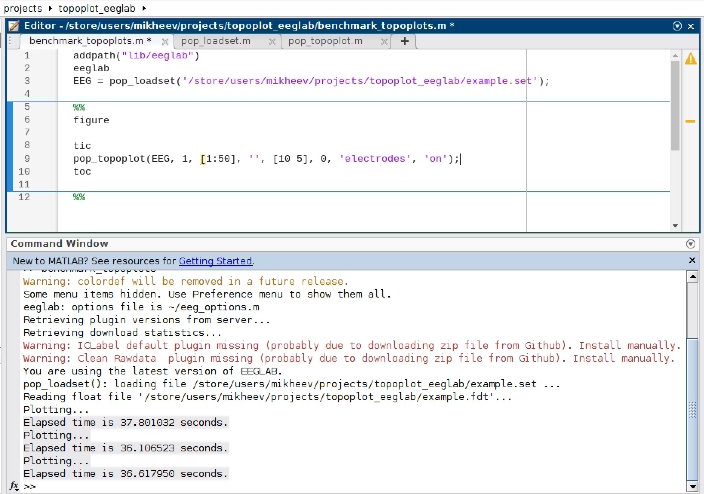
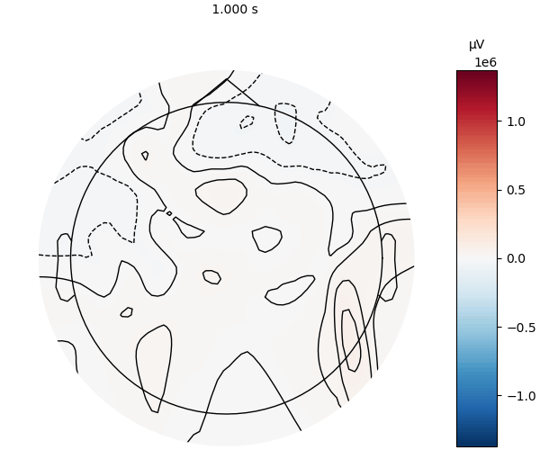

Speed measurement
Here we will compare the speed of plotting UnfoldMakie with MNE (Python) and EEGLAB (MATLAB).
Three cases are measured:
- Single topoplot
- Topoplot series with 50 topoplots
- Topoplott animation with 50 timestamps
Note that the results of benchmarking on your computer and on Github may differ.
using UnfoldMakie
using TopoPlots
using BenchmarkTools
using Observables
using CairoMakie
using PythonPlot;
using PyMNE; CondaPkg Found dependencies: /home/runner/.julia/packages/PyMNE/HGgbW/CondaPkg.toml
CondaPkg Found dependencies: /home/runner/.julia/packages/PythonCall/L4cjh/CondaPkg.toml
CondaPkg Found dependencies: /home/runner/.julia/packages/PythonPlot/oS8x4/CondaPkg.toml
CondaPkg Initialising pixi
│ /home/runner/.julia/artifacts/cefba4912c2b400756d043a2563ef77a0088866b/bin/pixi
│ init
│ --format pixi
└ /home/runner/work/UnfoldMakie.jl/UnfoldMakie.jl/docs/.CondaPkg
✔ Created /home/runner/work/UnfoldMakie.jl/UnfoldMakie.jl/docs/.CondaPkg/pixi.toml
CondaPkg Wrote /home/runner/work/UnfoldMakie.jl/UnfoldMakie.jl/docs/.CondaPkg/pixi.toml
│ [dependencies]
│ openssl = ">=3, <3.6"
│ uv = ">=0.4"
│ libstdcxx-ng = ">=3.4,<15.0"
│ matplotlib = ">=1"
│
│ [dependencies.python]
│ channel = "conda-forge"
│ build = "*cpython*"
│ version = ">=3.8,<4, >=3.4,<4"
│
│ [project]
│ name = ".CondaPkg"
│ platforms = ["linux-64"]
│ channels = ["conda-forge", "anaconda"]
│ channel-priority = "strict"
│ description = "automatically generated by CondaPkg.jl"
│
│ [pypi-dependencies]
└ mne = ">=1.4"
CondaPkg Installing packages
│ /home/runner/.julia/artifacts/cefba4912c2b400756d043a2563ef77a0088866b/bin/pixi
│ install
└ --manifest-path /home/runner/work/UnfoldMakie.jl/UnfoldMakie.jl/docs/.CondaPkg/pixi.toml
✔ The default environment has been installed.Data input
dat, positions = TopoPlots.example_data()
df = UnfoldMakie.eeg_array_to_dataframe(dat[:, :, 1], string.(1:length(positions)));Topoplots
UnfoldMakie.jl
@benchmark plot_topoplot(dat[:, 320, 1]; positions = positions)BenchmarkTools.Trial: 134 samples with 1 evaluation per sample.
Range (min … max): 33.087 ms … 162.865 ms ┊ GC (min … max): 0.00% … 55.56%
Time (median): 33.618 ms ┊ GC (median): 0.00%
Time (mean ± σ): 37.348 ms ± 18.916 ms ┊ GC (mean ± σ): 6.42% ± 9.52%
█▃
███▁▁▁▁▁▁▁▁▁▁▁▁▁▁▁▁▁▁▁▁▁▁▁▁▁▁▁▁▁▁▁▁▁▁▁▁▁▁▁▁▁▁▁▁▁▁▁▁▁▁▁▁▁▄▁▁▅ ▄
33.1 ms Histogram: log(frequency) by time 140 ms <
Memory estimate: 9.10 MiB, allocs estimate: 138002.UnfoldMakie.jl with DelaunayMesh
@benchmark plot_topoplot(
dat[:, 320, 1];
positions = positions,
topo_interpolation = (; interpolation = DelaunayMesh()),
)BenchmarkTools.Trial: 137 samples with 1 evaluation per sample.
Range (min … max): 32.919 ms … 161.147 ms ┊ GC (min … max): 0.00% … 56.21%
Time (median): 33.671 ms ┊ GC (median): 0.00%
Time (mean ± σ): 36.653 ms ± 16.830 ms ┊ GC (mean ± σ): 4.86% ± 8.07%
█▂▁
███▁▁▁▁▁▁▁▁▁▁▁▁▁▁▁▁▁▁▁▁▁▁▁▁▁▁▁▁▁▁▁▁▁▁▁▁▁▁▁▁▁▁▁▁▁▁▄▁▁▁▁▁▁▁▁▁▄ ▄
32.9 ms Histogram: log(frequency) by time 151 ms <
Memory estimate: 9.10 MiB, allocs estimate: 138007.MNE
posmat = collect(reduce(hcat, [[p[1], p[2]] for p in positions])')
pypos = Py(posmat).to_numpy()
pydat = Py(dat[:, 320, 1])
@benchmark begin
f = PythonPlot.figure()
PyMNE.viz.plot_topomap(
pydat,
pypos,
sphere = 1.1,
extrapolate = "box",
cmap = "RdBu_r",
sensors = false,
contours = 6,
)
f.show()
endBenchmarkTools.Trial: 274 samples with 1 evaluation per sample.
Range (min … max): 11.793 ms … 660.003 ms ┊ GC (min … max): 0.00% … 0.00%
Time (median): 12.143 ms ┊ GC (median): 0.00%
Time (mean ± σ): 18.248 ms ± 57.431 ms ┊ GC (mean ± σ): 0.00% ± 0.00%
▁▃█▂▇▃▂
▄▄▅▇███████▇▅▅▄▃▃▃▄▄▅▅█▅▆▅▆▅▅▅▃▃▄▁▄▁▃▁▁▁▃▁▃▃▁▁▁▁▁▁▁▁▁▃▁▁▁▁▁▃ ▃
11.8 ms Histogram: frequency by time 13.9 ms <
Memory estimate: 4.12 KiB, allocs estimate: 124.Topoplot series
Note that UnfoldMakie and MNE have different defaults for displaying topoplot series. UnfoldMakie in plot_topoplot averages over time samples. MNE in plot_topopmap displays single samples without averaging.
UnfoldMakie.jl
@benchmark begin
plot_topoplotseries(
df;
bin_num = 50,
positions = positions,
axis = (; xlabel = "Time windows [s]"),
)
endBenchmarkTools.Trial: 3 samples with 1 evaluation per sample.
Range (min … max): 1.903 s … 1.928 s ┊ GC (min … max): 3.18% … 5.12%
Time (median): 1.915 s ┊ GC (median): 4.86%
Time (mean ± σ): 1.915 s ± 12.302 ms ┊ GC (mean ± σ): 4.39% ± 1.05%
█ █ █
█▁▁▁▁▁▁▁▁▁▁▁▁▁▁▁▁▁▁▁▁▁▁▁▁▁█▁▁▁▁▁▁▁▁▁▁▁▁▁▁▁▁▁▁▁▁▁▁▁▁▁▁▁▁▁█ ▁
1.9 s Histogram: frequency by time 1.93 s <
Memory estimate: 399.67 MiB, allocs estimate: 5775588.MNE
easycap_montage = PyMNE.channels.make_standard_montage("standard_1020")
ch_names = pyconvert(Vector{String}, easycap_montage.ch_names)[1:64]
info = PyMNE.create_info(PyList(ch_names), ch_types = "eeg", sfreq = 1)
info.set_montage(easycap_montage)
simulated_epochs = PyMNE.EvokedArray(Py(dat[:, :, 1]), info)
@benchmark simulated_epochs.plot_topomap(1:50)BenchmarkTools.Trial: 6 samples with 1 evaluation per sample.
Range (min … max): 688.063 ms … 1.931 s ┊ GC (min … max): 0.00% … 0.00%
Time (median): 691.850 ms ┊ GC (median): 0.00%
Time (mean ± σ): 1.081 s ± 606.824 ms ┊ GC (mean ± σ): 0.00% ± 0.00%
█
█▁▁▁▁▁▁▁▁▁▁▁▁▁▁▁▁▁▁▁▁▁▁▁▁▁▁▁▁▁▁▁▁▁▁▁▁▁▁▁▁▁▁▁▁▁▁▁▁▁▁▁▁▁▆▁▁▁▁▁▆ ▁
688 ms Histogram: frequency by time 1.93 s <
Memory estimate: 3.06 KiB, allocs estimate: 98.MATLAB
Running MATLAB on a GitHub Action is not easy. So we benchmarked three consecutive executions (on a screenshot) on a server with an AMD EPYC 7452 32-core processor. Note that Github and the server we used for MATLAB benchmarking are two different computers, which can give different timing results.
Animation
The main advantage of Julia is the speed with which the figures are updated.
timestamps = range(1, 50, step = 1)
framerate = 5050UnfoldMakie with .gif
@benchmark begin
f = Makie.Figure()
dat_obs = Observable(dat[:, 1, 1])
plot_topoplot!(f[1, 1], dat_obs, positions = positions)
record(f, "topoplot_animation_UM.gif", timestamps; framerate = framerate) do t
dat_obs[] = @view(dat[:, t, 1])
end
endBenchmarkTools.Trial: 2 samples with 1 evaluation per sample.
Range (min … max): 3.970 s … 4.033 s ┊ GC (min … max): 1.28% … 0.43%
Time (median): 4.002 s ┊ GC (median): 0.85%
Time (mean ± σ): 4.002 s ± 44.089 ms ┊ GC (mean ± σ): 0.85% ± 0.60%
█ █
█▁▁▁▁▁▁▁▁▁▁▁▁▁▁▁▁▁▁▁▁▁▁▁▁▁▁▁▁▁▁▁▁▁▁▁▁▁▁▁▁▁▁▁▁▁▁▁▁▁▁▁▁▁▁▁█ ▁
3.97 s Histogram: frequency by time 4.03 s <
Memory estimate: 680.83 MiB, allocs estimate: 961579.
MNE with .gif
@benchmark begin
fig, anim = simulated_epochs.animate_topomap(
times = Py(timestamps),
frame_rate = framerate,
blit = false,
image_interp = "cubic", # same as CloughTocher
)
anim.save("topomap_animation_mne.gif", writer = "ffmpeg", fps = framerate)
endBenchmarkTools.Trial: 1 sample with 1 evaluation per sample.
Single result which took 9.164 s (0.00% GC) to evaluate,
with a memory estimate of 4.07 KiB, over 150 allocations.Note, that due to some bugs in (probably) PythonCall topoplot is black and white.

This page was generated using Literate.jl.